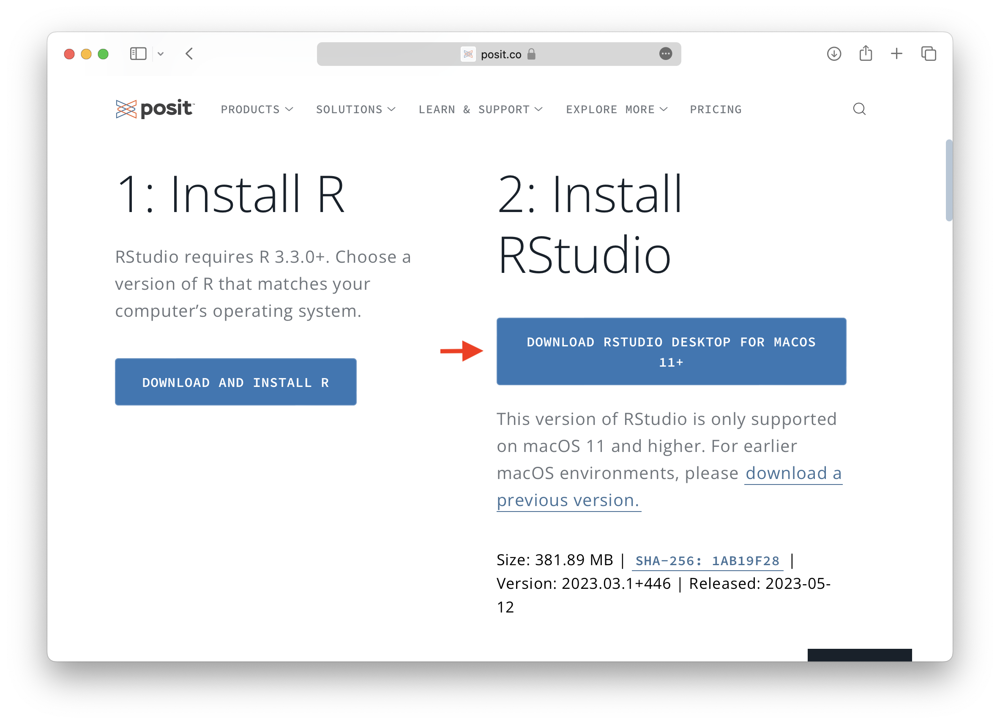

Getting started
The practicum doesn’t begin until Tuesday, May 30th, but there are some things I’d like you to accomplish prior to our first meeting so that we can hit the ground running!
Download and install R v4.3.0 on your personal laptop.
Download and install RStudio v2023.03.1+446 on your personal laptop.
Join our DataCamp classroom (see email for invite link) and complete the “Analytic Fundamentals” assessment.
Read the first chapter of our textbook, R for Data Science by Hadley Wickham and Garrett Grolemund.
Installing R
Head to http://r-project.org and click on “CRAN” under the Download section of the left-hand navigation panel.
Click on 0-Cloud URL from the list of CRAN mirrors.
Select the download link corresponding to your operating system.
On Windows machines click on the “install R for the first time” hyperlink. In macOS, select the .pkg file that corresponds to your system hardware (M1/M2 vs. intel processor). If you’re unsure go to > About This Mac and look at your processor specs.
In both Windows and macOS, the software should be sent to your Downloads folder. Double-click the .exe (Windows) or .pkg (macOS) file to start the installation. Accept all defaults (i.e., don’t fiddle with anything – just be agreeable and keep clicking “Continue”).
Installing RStudio
Head to http://posit.co and click on the huge, blue “DOWNLOAD RSTUDIO” button.
Scroll down a bit until you see another (slightly smaller) “DOWNLOAD RSTUDIO” button and click it.
Scroll down a bit until you see yet another big, blue button, this time promising to download the desktop version of RStudio specific to your operating system. Click with determination and maybe they’ll actually believe that we want the software this time.

On Windows machines, I believe your browser will download a .exe file that you can run to install RStudio Desktop. In macOS, a .dmg file is sent to your Downloads folder. You must double-click this file, and drag the RStudio icon into your Applications folder. Next, locate the RStudio disk image icon that has appeared on your Desktop and drag it to Trash to unmount. Once the ritual is complete, you’re safe to delete the .dmg file from your Downloads folder.
Joining DataCamp

We’ll use DataCamp, an online data science education tool, as a homework and general training platform throughout the practicum. You’ve received an email containing an invite link to our DataCamp classroom. Click the link and sign up using your Gordon email address. Once enrolled, you’ll see an assignment called “Analytic Fundamentals” that I’ve asked you to complete by 11:59 pm on May 29th. This is a short, timed assessment that will no doubt stress the heck out of you. You’ll answer roughly 10 questions about basic analytics scenarios and statistical concepts. DO NOT SWEAT THIS ASSESSMENT. The results will have no impact on your life. I just wanted to collect some useful data while giving you an opportunity to practice using the DataCamp website.
You must access the assessment through our classroom page in order for me to track your completion of the assignment.